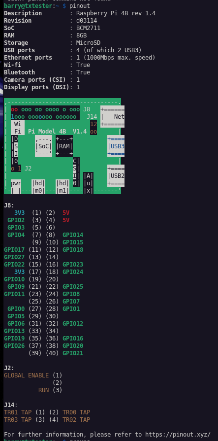

Setting up a Raspberry Pi4B to test 433 MHz SDR

https://pi.pinout.xyz/
~# rtl_433
rtl_433 version 25.02 (2025-02-19) inputs file rtl_tcp RTL-SDR SoapySDR
[SDR] No supported devices found.
~#
Everything says to use RPi RF, but it uses RPi.GPIO and not the newer lgpio, doesn't seem to work with newer releases like trixie.